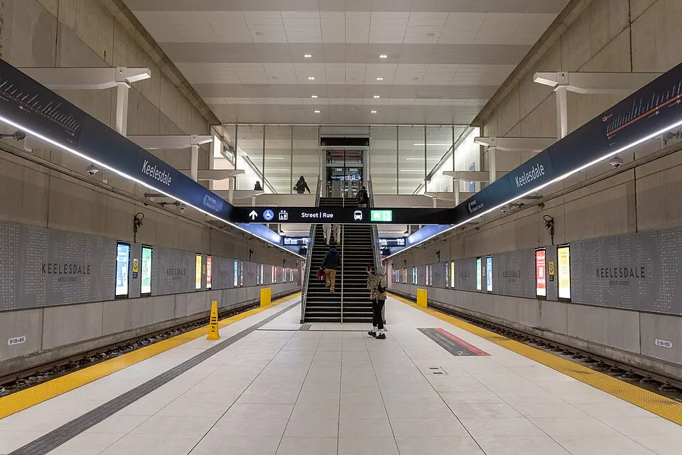

Signal
SignalStation atlas / Keelesdale
Station history
Keelesdale


Station history
Construction of Keelesdale Station began with a groundbreaking ceremony.
East of Mount Dennis, the line opened beneath the meeting of Keele Street, Trethewey Drive and Eglinton Avenue West.